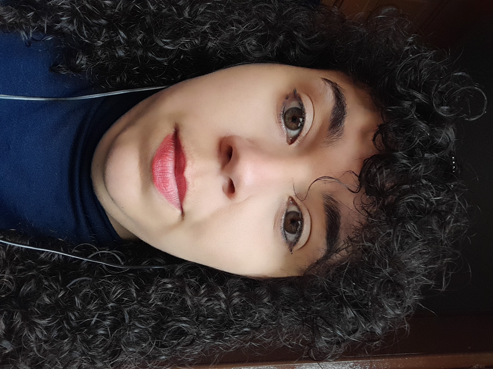

Sobre mim :)

Oi, me chamo Ana_Paula_Wulff_Cardoso, tenho 24 anos, moro em Viamão\RS e no momento estou cursando Análise e Desenvolvimnento de Sistemas na UniFatecie, porém meu amor pela programação veio bem antes disso e estudava como autodidata.
Adoro a área de font-end (que foi o motivo do início dessa jornada) mas também gosto muito de outras como IA, jogos e pretendo estudar Hacking Ético em um futuro próximo! Segue abaixo as linguagens que sei até agora.
Atualmente estou estudando C++ porém não coloquei abaixo pois começei há pouco.
Linguagens